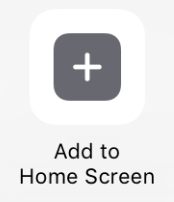
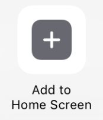

Hello My Name is Nicole
Let me tell you about myself....
I am a senior at Penn State University majoring in Information, Science, and Technology with a focus on application development. I have extensive real world experience in security, distribution and manufacturing. This experience enables me to have a unique point of view in multiple areas where technology is implemented.
I will graduate with a BA in December of 2023. I enjoy learning new technologies and development software. I have extensive experience with multiple programs such as IntelliJ, NetBeans, Adobe XD, Andriod Studio, XCode, ESRI products, ArcGIS, and MSOffice365. I have 2 years experience in Java, HTML, and CSS. I have over 1 year experience in GIS mapping, data entry, and data procurement.
Education
I have completed by BA at Penn State's World Campus in 2 years and have completed USAF basic training and Security Police training.
Pennsylvania State University
Expected Graduation December 2024
BA Information, Science, and Technology
Colorado Institute of Art
January 1997 - January 1998
Completed 1 year at the Art Institute enrolled in Graphic Design
This was many years ago but I learned concepts of design and color theory. None of the technology I learned at this time is relevant today, but I learned the concepts of design and that has been expanded upon with my more recent education.
United States Air Force
January 1994 - June 1996
Successfully completed Air Force Basic Training and completed Security Police Training. This included extensive education on military law, weapons use and safety, and Air Base Ground Defense. Was stationed at F.E. Warren Air Base in Cheyenne Wyoming guarding nuclear weapons. I had obtained a security clearance and was certified under Personal Reliability Program.
Past Employment
This is my past employment that has given me vast experience in manufacturing, supply chain distribution, UL standards, OSHA compliance, PLC's, and nuclear safety.
United States Geological Survey
GeoPathways Intern
August 2022 - Current
In this position I provided administative assistance to the Senior Program Advisor at US Geological Survey. I contributed to mulitple projects within our Disaster Pilot which included creating a HUb within Amerigeo utilizing ArcGIS. I created content and shared with the organization. The Disaster Pilot project required global coordination with other interns and 3rd party partners including NOAA, NASA, FSA, Amazon, OSM, and Voyager Search. I acted as admin to our Voyager Search platform coordinating access and roles to our interns and multiple partners.
Appvion
Manufacturing
Febuary 2014 - April 2021
I held multiple positions within Appvion that gave me extensive knowledge of paper manufacturing process. All positions held within Appvion required compliance of OSHA safety and reporting standards along with knowledge of the MSDS. Working in a fast paced manufacturing environment required constant awareness of safety due to the many ways all the machinaery could easily kill you.
Water Operator
Responsible for 5 million gallons of water that was daily utilized by paper making operations. This included fresh water, fire water, and recyled bleached water. Had to ensure paper machines had appropriate water pressure to manufactor paper while also ensuring used water was properly directed so it could be bleached and reused in other various operations. This included directing water that was not reusable directly to the waste treatment facility. Water was constantly tested for quality and reuseablity.
Brown Stock Washer Operator
Responsible for operating 5 washers that cleaned pulp. This required constantly monitoring water levels and pulp consistancy and assisting in cooking wood chips to create pulp.
Pulp Press Operator
Operated pulp press to convert paper pulp into sheets of lap. This required constant monitoring to ensure quality lap and proper operation. Kept track of quantity produced and location of storage. Loaded trailers with finished product and coordinated transportation of finished product to storage location and empty trailers.
Fuel Operator
Responsible for loading fuel needed for boiler operations. This included feeding tree bark through a pulverizor and loading coal into the coal bin. This was achieved by operating a front end loaded to feed bark and coal onto conveyors.
Winder Operator Assistant
Assisted winder operator with set up and proper operation of winder that converter 2 tons jumbo rolls of paper into smaller rolls that where ordered by customers. Responsible for verifying size and quality of ordered rolls. Labeled and packaged finished rolls.
Coating Operator
Responsible for coordinating with paper machine operator and coating department to facilitate a fast, low-waste paper change over. This entailed filling and switching coating tanks for wire and felt side of paper within a 5 minute window. Monitor coating tank levels, clean filters and used tanks while also testing starch for proper dilution and testing paper for proper additives.
National Specialty Lighting
Product Specialist
May 2000 - October 2013
Responsible for assembling, packing, and shipping customer orders. Ensuring customer had all nessaccery parts for installation. input customer orders and corrected pricing. Inventory control, testing failed product, customer service and installation phone support. Represented the company at Light Fair in Las Vegas, NV.
Courses Studied
During my formal education at Penn State I completed multiple classes in Software Design and Coding.
Penn State Classes
Data Organization
Network and Telecommunication
Introduction to Web Design
Introduction to Python Programming
Introduction to Application Development
Information and Organization, Database Organization
Object Oriented Application Development
Object Oriented Programming and Software Development
Human Centered Design
Emerging Issues and Technology, Health Information Technology
Application Development Studio I
Distributed -Object Computing
The Engineering of Complex Software Systems
Emerging Issues and Technology, Content Management Systems
Awards and Skills
Awards and Certificates
IST Certificate
Women in Engineering Scholarship Contest, 2nd place
Deans List
Honorary Discharge from USAF
Skills
- Teamwork
- JAVA
- HTML
- CSS
- OOP
- Human-Centered Design
- AGILE
- SCRUMM
- SLCD
- ArcGIS
- Geograpical MApping
- Android Studio
- Xcode
- Python
- Restful Web Services
- IDE
- Progressive Web Apps
Install my app on your home screen for quick access
Tap  then 
then 